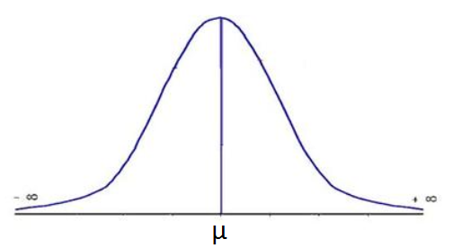

오컴의 면도날과 MDL 원칙
시험 또한 학생의 학업능력을 추정하는 하나의 휴리스틱이다
모든 수험생들의 인성과 수학능력을 3박 4일 합숙을 통해 면밀히 평가할 수 있다면 좋겠지만, 우리 사회는 현실적으로 그런 비용을 감당할 만한 여유가 없다. 그래서 우리는 표준화된 시험을 통해 학생들의 학업능력을 추정하는, 시험이란 이름의 휴리스틱으로 학생들을 평가한다.
이처럼 휴리스틱(Heuristic)이란 시간이나 정보가 불충분하여 합리적인 판단을 할 수 없는 경우, 신속하게 사용하는 어림짐작의 기술을 일컫는다.
휴리스틱은 시험과 같은 추정(Estimation)뿐만 아니라 의사결정(Decision making) 문제에서도 자주 사용된다. 그 중 가장 대표적인 것이 오컴의 면도날 (Occam's Razor)로, 다음과 같이 정의된다:
Frustra fit per plura quod potest fieri per pauciora
같은 현상을 설명하는 두 개의 주장이 있다면, 간단한 쪽을 선택하라 - William of Ockham
핵심은 필요한 최소한의 전제만을 가지고 있는 것을 선택하라는 것으로, 최소주의 철학과 일맥상통한다.
오컴의 면도날은 14세기 수도승이 주장한 매우 간단한 명제임에도 불구하고 그 단순함과 효용성으로 많은 현대 과학자들의 지지를 받고 있다. 하지만 추상적이고 모호한 정의 탓에 과학적으로 엄밀하게 적용하기가 어려워 일상생활이나 토론 따위에서 쓰이는 정도로 그치고 있었다. 학자들은 이 유용한 휴리스틱을 보다 엄밀하게 사용하기 위해 오랜시간 동안 수학적으로 정형화하려는 시도를 해왔는데, 그 중 가장 유명한 것이 1978년 핀란드 수학자 Jorma Rissanen가 제안한 MDL(Minimum Description Length) 원칙이다.
윌리엄 - 오컴(William of Ockham)For any probability distribution $P$, it is possible to construct a code $C$ such that the length (in bits) of $C(x)$ is equal to $-log _{2}P(x)$; This code minimizes the expected code length.
모든 분포 $P$에 대해 $P$를 $-log_{2}P(x)$ 비트(Bit) 만큼의 정보로 변환하는 코드 $C$가 존재한다; 이 코드는 해당 분포에 대한 설명의 길이를 최소화 하는 코드다 - MDL Principle

확률분포 $P$를 $B = -log_{2}P(x)$ 비트(Bit)에 저장하는 과정 $C$가 모든 분포 $P$에 대해 항상 존재하며, 이 $C$는 저장될 비트 수에 대한 기댓값 $\mathbb{E}_p[B]$, 즉 $P$에 대한 정보 엔트로피 $H_p(X)$를 최소화한다는 것이다. MDL 원칙은 여기서 $P$에 대한 설명의 길이 $\mathbb{E}_p[B]$가 가장 짧은 $P$를 선택할 것을 권장한다.

정규분포는 $\mu$와 $\sigma$가 주어졌을 때 오컴의 면도날 관점에서 가장 타당한 분포다
요약하자면 오컴은 가장 짧은 설명의 가설을 선호했으므로 우리는 $H_p(X)$를 최소화하는 $P$를 선택해야 한다는 것이다. 이를 수식으로 표현하면 다음과 같이 정의된다:
- $X = \{x \mid \text{Observations}\}$
- $P = \{p \mid \text{Candidate distributions to explain observations}\}$
- $MDL(X; P) = \arg\min\limits_{p \in P} H_p(X);$
즉 관측값 $X$가 주어졌을 때, $X$를 설명할 분포 후보군 $P$ 중 $H_p(X)$가 가장 작은 것을 선택하라는 뜻이다.
한 가지 놀라운 사실은 평균 $\mu$와 표준편차 $\sigma$가 주어졌을 때 $MDL(X; P, \mu, \sigma) = N(\mu, \sigma^2)$이라는 것이다. 다시말해 분포의 평균과 표준편차가 주어졌을 때 MDL원칙 아래 가장 타당한 분포는 정규분포라는 의미인데, 이는 신호처리와 선형회귀 등에서 데이터 노이즈를 정규분포로 모델링 하는 것이 중심극한 정리 뿐만 아니라, 오컴의 면도날 관점에서도 가장 타당한 선택이라는 것을 시사한다.